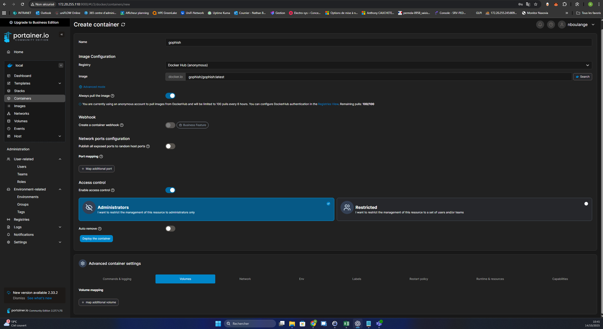
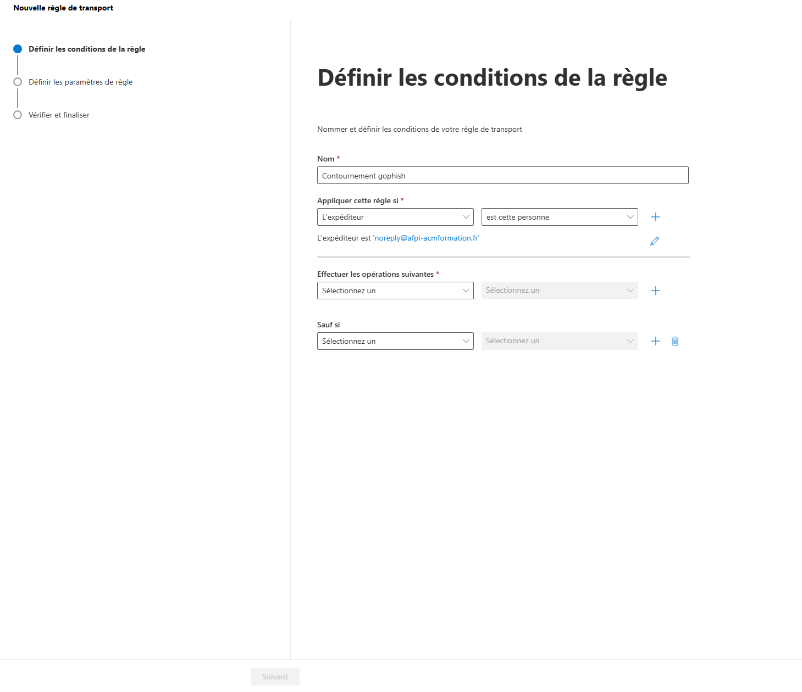
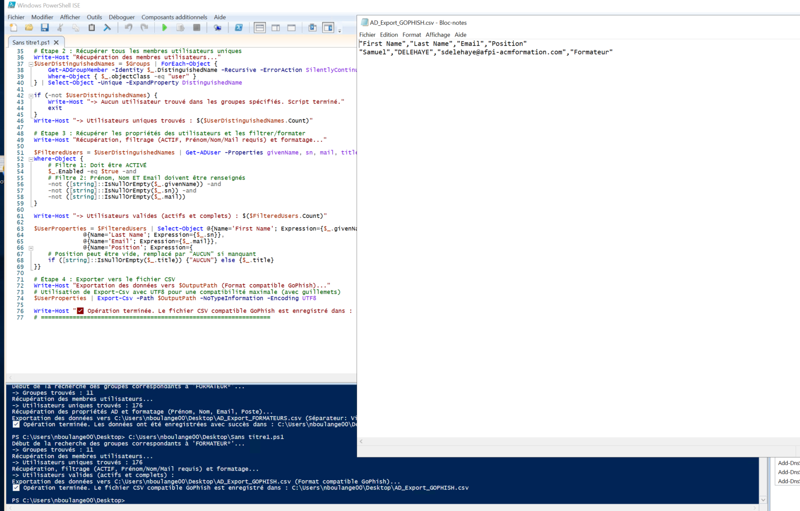
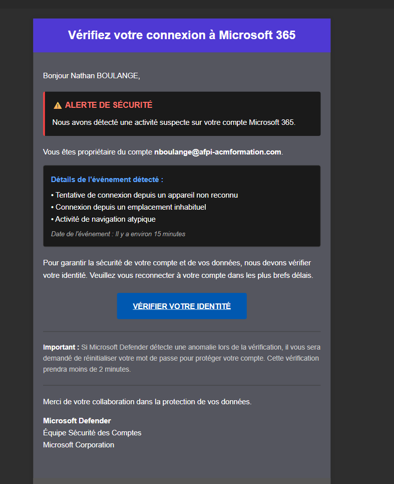
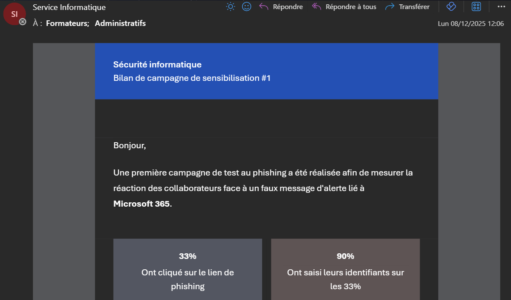

Campagne de phishing interne
Conception et déploiement d’une campagne de phishing pour sensibiliser les utilisateurs et tester les réflexes de sécurité.
Compétences SISR mobilisées
Contexte et objectif du projet
Contexte : L’entreprise est régulièrement exposée aux risques de phishing (mails frauduleux, liens malveillants) et souhaite mesurer le niveau de vigilance de ses collaborateurs.
Objectif : Concevoir et exécuter une campagne de phishing interne contrôlée afin de sensibiliser les utilisateurs et d’identifier les axes de progrès en matière de cybersécurité.
- Simuler une attaque réaliste mais maîtrisée (sans impact réel sur les systèmes).
- Observer les comportements : clics, saisie d’identifiants, signalement du mail suspect.
- Préparer des actions de remédiation (communication, rappel des bonnes pratiques).
Création de l’instance GoPhish
But de l’étape : disposer d’un environnement dédié pour concevoir, envoyer et suivre la campagne de phishing.
- Installation et configuration initiale de GoPhish comme plateforme de simulation de phishing.
- Sécurisation de l’accès à la console (compte administrateur, URL d’accès, mot de passe fort).
- Paramétrage de base : langue, fuseau horaire, vérification des paramètres SMTP.

Interface GoPhish utilisée pour piloter la campagne de phishing.
Adaptation de la sécurité Microsoft 365
But de l’étape : permettre aux mails de test d’arriver jusqu’aux boîtes des utilisateurs tout en restant dans un cadre maîtrisé.
- Création d’une règle de transport dans Microsoft 365 pour autoriser les mails issus de GoPhish.
- Définition du domaine d’envoi afpi-acmformation.fr pour coller à l’environnement réel de l’entreprise.
- Contrôles pour éviter le classement systématique en spam tout en gardant les protections de sécurité actives.

Règle M365 autorisant la délivrance contrôlée des mails de la campagne.
Préparation des cibles depuis l’Active Directory
But de l’étape : générer une liste de destinataires fiable à partir de l’AD, sans saisie manuelle.
- Rédaction d’un script PowerShell pour interroger l’Active Directory.
- Récupération des comptes utilisateurs et de leurs adresses mail.
- Export au format attendu par GoPhish (CSV) puis import dans un “groupe de cibles”.

Script de récupération des utilisateurs AD et import dans le profil d’envoi GoPhish.
Création du mail et envoi de la campagne
But de l’étape : envoyer un mail de phishing réaliste à l’ensemble des cibles pour observer leurs réactions.
- Création du modèle d’email de phishing dans GoPhish (objet, contenu, lien vers la page de simulation).
- Association du modèle au groupe de cibles issu de l’AD.
- Paramétrage de la campagne (expéditeur, domaine, suivi des clics et des soumissions).
- Lancement de la campagne et contrôle du bon départ des envois.

Exemple du mail de phishing tel qu’il est reçu par les utilisateurs.
Analyse des résultats et bilan envoyé aux équipes
But de l’étape : exploiter les résultats pour sensibiliser les utilisateurs et proposer des améliorations.
- Consultation du tableau de bord GoPhish (clics, ouvertures, soumissions) sans exploiter de données nominatives.
- Identification des comportements à améliorer (ex : clic sans vérifier l’adresse, saisie d’identifiants).
- Rédaction et envoi d’un mail de bilan à l’ensemble des participants expliquant la démarche.
- Rappel des bonnes pratiques anti-phishing et des canaux de signalement proposés par l’IT.

Mail de bilan envoyé aux utilisateurs avec les résultats globaux et les bonnes pratiques à retenir.
Résultats et apports pour l’entreprise
Les collaborateurs ont été confrontés à un cas concret de phishing, ce qui ancre mieux les messages de prévention.
La campagne a permis d’identifier les bons réflexes (signalement, non-clic) et ceux à améliorer.
Les résultats ont servi de base pour proposer des actions de sensibilisation ciblées.